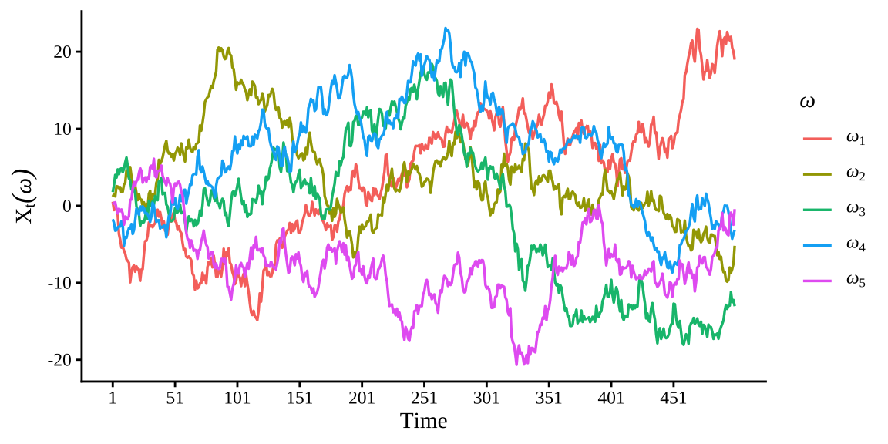
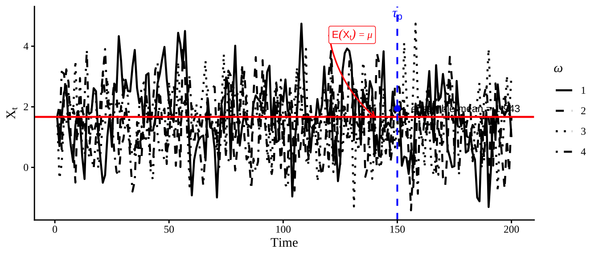
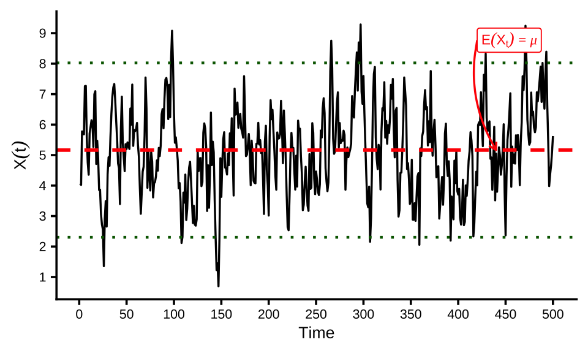
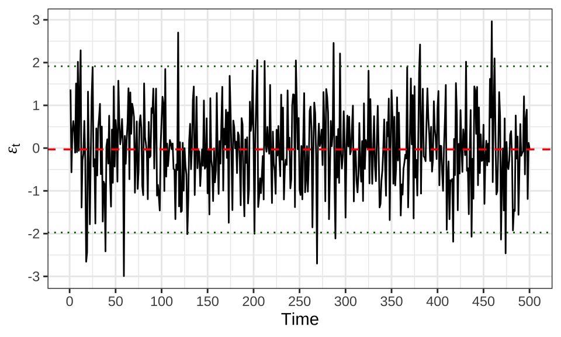
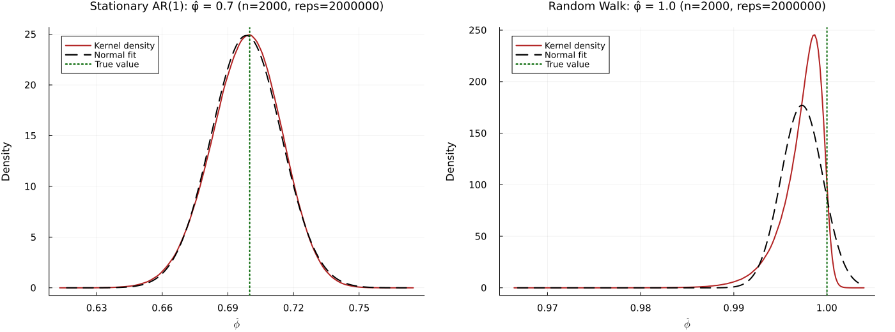
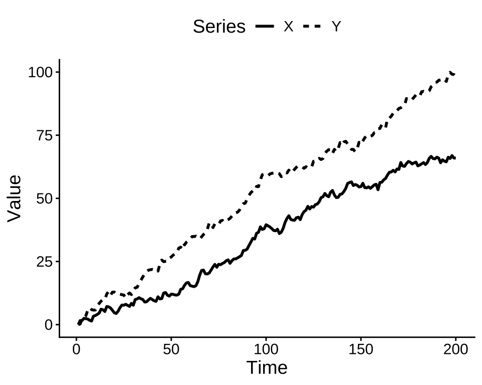
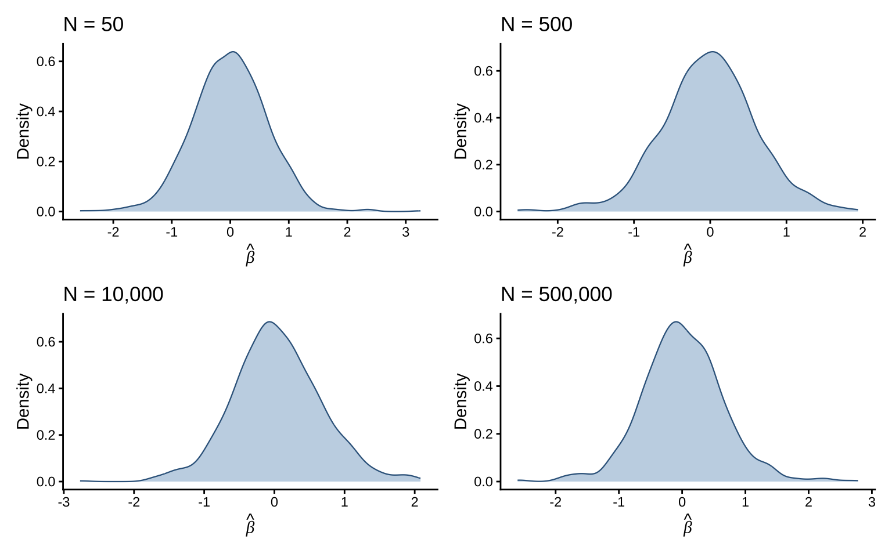

Loading required package: sysfontsLoading required package: showtextdbWarning: Using `size` aesthetic for lines was deprecated in ggplot2 3.4.0.
ℹ Please use `linewidth` instead.
Time-series econometrics analyzes sequences of observations indexed by time and explicitly models temporal dependence. Time-series data commonly exhibit autocorrelation, non-stationarity, and seasonality. As a result, the standard i.i.d. assumptions often fail and require specialized methods. This handout summarizes core definitions and properties of stationary and integrated processes, and gives concise examples and illustrations.
Distinguishing stationary from integrated series is essential for choosing models and making valid inferences. Central to these ideas is the notion of a stochastic process, defined below.
Alternatively, we define a stochastic process as follows:
Key Perspectives
• Random variable view: For each \(\tau \in T\), \(X(\tau)\) is a random variable.
• Sample path view: For each \(\omega \in \Omega\), \(X(\omega, \cdot)\) is a deterministic function of time.
• Distributional view: The finite-dimensional distributions \(X(\tau_1), \ldots, X(\tau_n)\) for \(\tau_1, \ldots, \tau_n \in T\) characterize the process.
Figure 1 illustrates the concept of a stochastic process through the simulation of multiple sample paths of a simple random walk, a canonical example within stochastic process theory. Each trajectory corresponds to a distinct realization of the process, associated with a particular outcome \(\omega \in \Omega\). The figure depicts the temporal evolution of the process values across these realizations, thereby exemplifying the intrinsic randomness and variability that are fundamental characteristics of stochastic processes.
Loading required package: sysfontsLoading required package: showtextdbWarning: Using `size` aesthetic for lines was deprecated in ggplot2 3.4.0.
ℹ Please use `linewidth` instead.
A stochastic process formalizes “random evolution over time”: given a probability space \((\Omega,\mathcal{F},\mathbb{P})\), the process assigns a random variable to each time point and, for a fixed outcome \(\omega\), a deterministic sample path. Figure 1 illustrates multiple sample paths (realizations) of a simple random walk. Each trajectory corresponds to a distinct realization. The figure depicts the temporal evolution of the process values across these realizations. It exemplifies the intrinsic randomness and variability that are fundamental characteristics of stochastic processes.
Equivalently, weak stationarity implies that \(\mathrm{Var}(X_t)=\gamma(0)\) is constant over time. Many linear time-series models with finite variance (for example, ARMA models with appropriate coefficients) are weakly stationary. Weak stationarity is the common assumption used in spectral analysis, autocorrelation estimation, and linear forecasting methods.

Figure 2 plots an ensemble of four independent realizations of a stationary AR(1) process to illustrate how individual sample paths fluctuate around a constant equilibrium while their average tracks the model’s theoretical mean: the red horizontal line marks the unconditional mean \(\mu=\alpha/(1-\phi)\), the vertical blue line marks the inspection time \(\tau_p\) (here \(t_p\)), and the blue point gives the ensemble mean at that time \(\bar{X}_{t_p}=\tfrac{1}{4}\sum_{j=1}^4 X_{t_p}^{(j)}\). The intuition is that, although each path exhibits idiosyncratic noise and short‑run deviations, stationarity implies their first and second moments do not drift over time, so averaging across independent realizations reduces the noise and yields an estimate centered on \(\mu\) (with sampling error that decreases as the ensemble size grows, by the law of large numbers).
Weak (or covariance) stationarity refers to a property of a time series whereby, notwithstanding its apparent randomness, its fundamental second-order characteristics remain invariant over time. Specifically, the mean of the series is constant, and the covariance between any two observations depends solely on the temporal distance (lag) separating them rather than on their specific positions in time. Intuitively, if one were to apply a fixed-length moving window across the series and compute summary statistics such as the mean, variance, and autocorrelations at various lags (e.g., 1, 2, or 3), these measures would remain stable and exhibit no systematic drift as the window progresses along the time axis. The series does not exhibit systematic increases in level, heightened volatility, or alterations in its correlation structure over calendar time; rather, it persistently replicates an identical variance–covariance configuration. This condition constitutes a less stringent requirement than full (strong) stationarity, as it disregards the complete distributional form and instead concentrates exclusively on the first and second moments. Such a focus is frequently sufficient for linear modeling frameworks and for a wide range of practical time-series methodologies.
The figure below illustrates a simulated weakly stationary AR(1) process, which is a common example of a stationary time series. The plot demonstrates the constancy of the mean (indicated by the red dashed line) and the stable variance over time, visually confirming the properties of weak stationarity.

The figure shows a simulated AR(1) series with coefficient \(\phi = 0.8\) and unconditional mean approximately \(\mu=5\). The dashed red horizontal line marks the sample mean, and the dotted green lines mark the bands at approximately \(\pm2\) sample standard deviations. Deviations from the mean are persistent but mean‑reverting (due to \(\phi<1\)), and the overall variance remains roughly constant over time — together these features visually illustrate weak (second‑order) stationarity: a constant mean and a covariance structure that does not drift over time.
A strongly (strictly) stationary process has the same finite-dimensional distributions under any time shift. This is a stronger requirement than weak stationarity, which only constrains the first two moments; strict stationarity demands full distributional invariance.
Strong (or strict) stationarity denotes the property whereby the complete probabilistic structure of a stochastic process remains invariant under temporal translation. That is, not only the mean or variance, but the entire joint distribution of any finite collection of time-indexed random variables remains the same under time shifts. Intuitively, if one were to extract numerous short segments of the series—such as triplets or longer contiguous subsequences—and randomly permute their temporal order, it would be impossible to determine whether a given segment originated earlier or later in time. This is because all configurations of values, along with their associated probability distributions, remain invariant under temporal translation. This constitutes a highly stringent requirement: it precludes not only the presence of trends and temporal variation in variability, but also any modification in the distributional form or dependence structure of the data. Consequently, the data-generating process is, in a fundamental sense, temporally invariant.
Key Points
• Entire distribution invariance: Not just the mean, variance, or covariance, but the full joint distribution of any finite collection of random variables remains the same under time shifts.
• Stronger than weak stationarity: Weak stationarity only requires invariance of first and second moments, while strong stationarity requires invariance of all finite-dimensional distributions.
• Implication: Every strong stationary process is weakly stationary (if moments exist), but not every weakly stationary process is strongly stationary.
Intuitively, strict stationarity means that time shifts do not change the joint distribution of observations.

The figure shows a realization of Gaussian white noise: i.i.d. draws from \(\mathcal{N}(0,1)\). The series has (approximately) zero mean, constant variance, and no serial correlation at nonzero lags. Because the observations are independent with identical marginals, this process is a canonical example of a strictly (strongly) stationary process: every finite‑dimensional distribution is invariant under time shifts. It is therefore also weakly stationary (second‑order) when second moments exist. This strongly stationary example contrasts with the AR(1) above, where temporal dependence yields persistence while still satisfying weak stationarity whenever \(|\phi|<1\).
These examples illustrate that identical marginal distributions and independence across time imply strict stationarity.
A classic example of a process that is weakly stationary but not strongly stationary is a non-Gaussian process with time-invariant mean and covariance (often sharing the same covariance structure as a Gaussian stationary process), since in the non-Gaussian case weak stationarity need not imply strong stationarity. To make it concrete, consider the following:
In short: weak stationarity only cares about mean, variance, and covariance stability, while strong stationarity requires full distributional invariance. This example illustrates how a process can meet the weaker conditions without satisfying the stronger ones.
Table 1 presents a compact summary of the series and models analyzed: each row corresponds to a data series or simulated DGP and columns report the sample size, the sample mean and variance, the estimated AR(1) coefficient (with its standard error), the first few autocovariances/autocorrelations, and the key test statistics with p‑values used to assess weak stationarity and unit roots. Together these entries show the degree of persistence and variability for each series, allow quick comparison of estimated dynamics across models (e.g., stationary vs. near‑unit‑root behavior), and indicate which series reject or fail to reject stationarity at conventional significance levels.
% Replaced pipe-style markdown table with a LaTeX longtable to avoid % layout distortion in PDF output.
Definition (White noise). Let \((\Omega,\mathcal{F},\mathbb{P})\) be a probability space, and let \(\{\varepsilon_t\}_{t\in\mathbb{Z}}\) be a real-valued stochastic process with finite second moments. The process is a white noise process with variance \(\sigma^2\) if, for every \(t,s\in\mathbb{Z}\), \[\mathbb{E}[\varepsilon_t]=0,\qquad \mathbb{E}[\varepsilon_t^2]=\sigma^2<\infty,\qquad \mathrm{Cov}(\varepsilon_t,\varepsilon_s)=0\ \text{for } t\neq s.\]
Equivalently, its autocovariance function is \[\gamma(h)=\mathrm{Cov}(\varepsilon_t,\varepsilon_{t-h})=\begin{cases}\sigma^2,&h=0,\\0,&h\neq0.\end{cases}\]
This is the weak, wide-sense, or second-order notion of white noise: the process is centered, has constant finite variance, and is uncorrelated across distinct times. If the \(\varepsilon_t\) are also independent and identically distributed (i.i.d.) with mean zero and variance \(\sigma^2\), then the process is a strong (strictly) stationary white noise process, because all finite-dimensional distributions are invariant under time shifts. The Gaussian white noise process is a special case where \(\varepsilon_t \sim \mathcal{N}(0,\sigma^2)\) i.i.d., which is also both weakly and strongly stationary.
Key Points
Two stronger notions are often separated from that basic definition:
i.i.d. white noise / strong white noise: \(\varepsilon_t\) are independent and identically distributed with mean zero and variance \(\sigma^2\).
Gaussian white noise: in addition, the process is jointly Gaussian; in that case, zero covariance already implies independence.
So, when one says:
\[\varepsilon_t \sim \text{i.i.d. } \mathcal{N}(0,\sigma^2),\]
It means that the process is a Gaussian white noise process, which is both weakly and strongly stationary. The i.i.d. assumption ensures strong stationarity, while the Gaussianity implies that the process is fully characterized by its mean and covariance structure.
And, when one says:
\[\varepsilon_t \sim \mathcal{WN}(0,\sigma^2),\]
In time-series analysis, the most cautious assumption is typically the second-order definition mentioned earlier, unless the author clearly specifies that the process is i.i.d. or Gaussian. This difference is important because being uncorrelated is a less restrictive condition than being independent. For instance, a process may display zero autocovariances at every nonzero lag—thereby meeting the criteria for weak white noise—yet still show higher-order dependencies that contradict the i.i.d. assumption. Consequently, in time-series analysis, it is essential to specify which definition of white noise is being used, since this choice affects the behavior of estimators and the reliability of statistical inference.
Definition (MA(q) process). Let \((\Omega,\mathcal{F},\mathbb{P})\) be a probability space, and let \(\{\varepsilon_t\}_{t\in\mathbb{Z}}\) be a white noise process with variance \(\sigma^2\). A stochastic process \(\{X_t\}_{t\in\mathbb{Z}}\) is a moving average process of order \(q\) (MA(\(q\))) if it can be represented as
\[X_t=\mu+\sum_{j=0}^{q}\theta_j\varepsilon_{t-j}.\]
Equivalently, in lag-operator notation, \[X_t=\mu+\theta(B)\varepsilon_t, \qquad \theta(B)=\theta_0+\theta_1B+\cdots+\theta_qB^q.\]
This is the conventional formal definition employed in time-series analysis.
The term “moving average” indicates that the variable \(X_t\) is constructed as a finite linear combination of the present and previous shocks \(\varepsilon_t,\varepsilon_{t-1},\dots,\varepsilon_{t-q}\). The source of randomness lies in the white-noise innovations, while the parameters \(\theta_j\) control the extent to which each shock influences the process over time.
According to this definition, an \(\mathrm{MA}(q)\) process is inherently weakly stationary, and its autocovariance function satisfies
\[\gamma(h)=0 \qquad \text{for } |h|>q,\] Thus, correlations disappear for lags greater than \(q\). More precisely, \[\gamma(h)=\sigma^2\sum_{j=0}^{q-|h|}\theta_j\theta_{j+|h|} \qquad \text{for } |h|\le q,\] adopting the convention that \(\theta_0 = 1\).
One frequently encountered special instance is the \(\mathrm{MA}(1)\) process: \[X_t=\mu+\varepsilon_t+\theta_1\varepsilon_{t-1}.\]
Consider the AR(1) process \[X_t = \phi X_{t-1} + u_t, \qquad t = 1,2,\dots,T,\] where \(\{u_t\}\) is a white-noise sequence with \[\mathbb{E}(u_t)=0, \qquad \mathrm{Var}(u_t)=\sigma^2,\]
\[\mathbb{E}(u_t)=0, \qquad \mathrm{Var}(u_t)=\sigma^2,\]
and suppose that \(X_0\) is fixed, or for simplicity \(X_0=0\).
We are interested in the special case \[\phi = 1,\] so that the process becomes \[X_t = X_{t-1} + u_t.\] This is the random walk model, which is the canonical unit root process.
Treating \(X_t\) as the dependent variable and \(X_{t-1}\) as the regressor, the OLS estimator solves \[\hat{\phi} = \arg\min_{\phi}\sum_{t=1}^T (X_t-\phi X_{t-1})^2.\]
Define the sum of squared residuals: \[S(\phi)=\sum_{t=1}^T (X_t-\phi X_{t-1})^2.\] Differentiate with respect to \(\phi\): \[\frac{\partial S(\phi)}{\partial \phi} = -2\sum_{t=1}^T X_{t-1}(X_t-\phi X_{t-1}).\] Setting the derivative equal to zero gives the normal equation: \[\sum_{t=1}^T X_{t-1}X_t = \hat{\phi}\sum_{t=1}^T X_{t-1}^2.\] Hence \[\hat{\phi} = \frac{\sum_{t=1}^T X_{t-1}X_t}{\sum_{t=1}^T X_{t-1}^2}.\]
Using the model \[X_t=\phi X_{t-1}+u_t,\] we can write \[X_{t-1}X_t = X_{t-1}(\phi X_{t-1}+ u_t) = \phi X_{t-1}^2 + X_{t-1}u_t.\] Summing over \(t\), \[\sum_{t=1}^T X_{t-1}X_t = \phi \sum_{t=1}^T X_{t-1}^2 + \sum_{t=1}^T X_{t-1}u_t.\] Substituting into the estimator gives \[\hat{\phi} = \phi + \frac{\sum_{t=1}^T X_{t-1}u_t}{\sum_{t=1}^T X_{t-1}^2}.\]
Therefore, \[\hat{\phi}-\phi = \frac{\sum_{t=1}^T X_{t-1}u_t}{\sum_{t=1}^T X_{t-1}^2}.\]
This decomposition is exact. It is the starting point for the asymptotic analysis.
We now specialize to the unit root case \(\phi=1\).
When \(\phi=1\), the process is \[X_t = X_{t-1}+u_t,\] so iterating backward yields \[X_t = X_0 + \sum_{s=1}^t u_s.\] If \(X_0=0\), then \[X_t=\sum_{s=1}^t u_s.\] Thus \(X_t\) is a partial sum process.
Under \(\phi=1\), the OLS estimator becomes \[\hat{\phi}-1 = \frac{\sum_{t=1}^T X_{t-1}u_t}{\sum_{t=1}^T X_{t-1}^2}.\] The behavior of this ratio is very different from the stationary AR(1) case. In particular, the estimator converges at rate \(T\), not at rate \(\sqrt{T}\).
To see why, note the orders of magnitude: \[X_t = O_p(\sqrt{T}),\] because it is a partial sum of mean-zero shocks. Hence \[X_{t-1}^2 = O_p(T),\] and therefore \[\sum_{t=1}^T X_{t-1}^2 = O_p(T^2).\] Similarly, \[\sum_{t=1}^T X_{t-1}u_t = O_p(T).\] So \[\hat{\phi}-1 = O_p(T^{-1}),\] which implies that the correct normalization is \[T(\hat{\phi}-1),\] not \(\sqrt{T}(\hat{\phi}-1)\).
A very useful identity is obtained from \[X_t = X_{t-1}+u_t.\] Squaring both sides, \[X_t^2 = X_{t-1}^2 + 2X_{t-1}u_t + u_t^2.\] Rearranging, \[2X_{t-1}u_t = X_t^2 - X_{t-1}^2 - u_t^2.\] Summing from \(t=1\) to \(T\) gives \[2\sum_{t=1}^T X_{t-1}u_t = \sum_{t=1}^T (X_t^2 - X_{t-1}^2) - \sum_{t=1}^T u_t^2.\] The first sum telescopes: \[\sum_{t=1}^T (X_t^2 - X_{t-1}^2) = X_T^2 - X_0^2.\] Therefore, \[\sum_{t=1}^T X_{t-1}u_t = \frac{1}{2}\left(X_T^2 - X_0^2 - \sum_{t=1}^T u_t^2\right).\] If \(X_0=0\), this reduces to \[\sum_{t=1}^T X_{t-1}u_t = \frac{1}{2}\left(X_T^2 - \sum_{t=1}^T u_t^2\right).\]
Hence \[\hat{\phi}-1 = \frac{\frac{1}{2}\left(X_T^2-\sum_{t=1}^T u_t^2\right)} {\sum_{t=1}^T X_{t-1}^2}.\] Multiplying by \(T\), \[T(\hat{\phi}-1) = \frac{\frac{1}{2}\left(T^{-1}X_T^2 - T^{-1}\sum_{t=1}^T u_t^2\right)} {T^{-2}\sum_{t=1}^T X_{t-1}^2}.\]
This formula already suggests the appropriate limits: \(T^{-1}X_T^2\) and \(T^{-1}\sum u_t^2\) are both \(O_p(1)\), and so is \(T^{-2}\sum X_{t-1}^2\).
Define the scaled partial sum process \[W_T(r) = \frac{1}{\sigma\sqrt{T}}X_{\lfloor Tr\rfloor}, \qquad 0\le r\le 1.\] Since under the unit root \[X_{\lfloor Tr\rfloor} = \sum_{s=1}^{\lfloor Tr\rfloor} u_s,\] we may write \[W_T(r) = \frac{1}{\sigma\sqrt{T}} \sum_{s=1}^{\lfloor Tr\rfloor} u_s.\] Under standard assumptions on \(\{u_t\}\), the functional central limit theorem implies \[W_T(\cdot)\Rightarrow W(\cdot) \quad \text{in } D[0,1],\] where \(W(\cdot)\) is standard Brownian motion.
This result is the key tool for obtaining the asymptotic distribution of the OLS estimator under a unit root.
Consider \[T^{-2}\sum_{t=1}^T X_{t-1}^2.\] Using \[X_{t-1} = \sigma\sqrt{T}\,W_T\!\left(\frac{t-1}{T}\right),\] we have \[X_{t-1}^2 = \sigma^2 T\, W_T\!\left(\frac{t-1}{T}\right)^2.\] Therefore, \[T^{-2}\sum_{t=1}^T X_{t-1}^2 = \sigma^2 \frac{1}{T}\sum_{t=1}^T W_T\!\left(\frac{t-1}{T}\right)^2.\] This is a Riemann sum, so by the continuous mapping theorem, \[T^{-2}\sum_{t=1}^T X_{t-1}^2 \Rightarrow \sigma^2 \int_0^1 W(r)^2\,dr.\]
We may proceed in two equivalent ways.
Method 1: Using the telescoping identity
Recall \[\sum_{t=1}^T X_{t-1}u_t = \frac{1}{2}\left(X_T^2-\sum_{t=1}^T u_t^2\right),\] when \(X_0=0\). Divide by \(T\): \[T^{-1}\sum_{t=1}^T X_{t-1}u_t = \frac{1}{2}\left(T^{-1}X_T^2 - T^{-1}\sum_{t=1}^T u_t^2\right).\]
Now, \[T^{-1}X_T^2 = \sigma^2 W_T(1)^2 \Rightarrow \sigma^2 W(1)^2,\] and by the law of large numbers, \[T^{-1}\sum_{t=1}^T u_t^2 \xrightarrow{p} \sigma^2.\] Hence \[T^{-1}\sum_{t=1}^T X_{t-1}u_t \Rightarrow \frac{\sigma^2}{2}\bigl(W(1)^2-1\bigr).\]
Method 2: Using a stochastic integral
Write \[T^{-1}\sum_{t=1}^T X_{t-1}u_t = \sigma^2 \sum_{t=1}^T W_T\!\left(\frac{t-1}{T}\right) \Bigl(W_T\!\left(\frac{t}{T}\right)-W_T\!\left(\frac{t-1}{T}\right)\Bigr).\] As \(T\to\infty\), this converges in distribution to the It^o integral \[\sigma^2\int_0^1 W(r)\,dW(r).\] By It^o’s formula, \[d(W(r)^2)=2W(r)\,dW(r)+dr.\] Integrating from \(0\) to \(1\), \[W(1)^2-W(0)^2 = 2\int_0^1 W(r)\,dW(r)+1.\] Since \(W(0)=0\), \[\int_0^1 W(r)\,dW(r) = \frac{1}{2}\bigl(W(1)^2-1\bigr).\] Thus again, \[T^{-1}\sum_{t=1}^T X_{t-1}u_t \Rightarrow \sigma^2 \int_0^1 W(r)\,dW(r) = \frac{\sigma^2}{2}\bigl(W(1)^2-1\bigr).\]
Recall \[T(\hat{\phi}-1) = \frac{T^{-1}\sum_{t=1}^T X_{t-1}u_t} {T^{-2}\sum_{t=1}^T X_{t-1}^2}.\] Using the limits derived above, \[T^{-1}\sum_{t=1}^T X_{t-1}u_t \Rightarrow \sigma^2 \int_0^1 W(r)\,dW(r),\] and \[T^{-2}\sum_{t=1}^T X_{t-1}^2 \Rightarrow \sigma^2 \int_0^1 W(r)^2\,dr.\] Therefore, by the continuous mapping theorem, \[T(\hat{\phi}-1) \Rightarrow \frac{\int_0^1 W(r)\,dW(r)} {\int_0^1 W(r)^2\,dr}.\] Using the identity \[\int_0^1 W(r)\,dW(r) = \frac{1}{2}\bigl(W(1)^2-1\bigr),\] \[T(\hat{\phi}-1) \Rightarrow \frac{\frac{1}{2}(W(1)^2-1)}{\int_0^1 W(r)^2\,dr}.\]
This is the asymptotic distribution of the OLS estimator under the unit root null. It is normal. This is the fundamental reason why conventional \(t\)-tests based on standard normal or Student-\(t\) critical values are invalid in the unit root case.
The result shows that the unit root case is nonstandard because the regressor \(X_{t-1}\) is itself a stochastic trend. In stationary autoregressions, the regressor has a stable second moment and the usual central limit theorem leads to a Gaussian limit for the estimator. Under a unit root, however, \(X_{t-1}\) behaves like a partial sum process and, after normalization, converges to Brownian motion. Consequently, the estimator is governed by functionals of Brownian motion rather than by a normal distribution.
More precisely, \[\hat{\phi}-1 = O_p(T^{-1}),\] so the estimator is : it converges to \(1\) faster than the usual \(T^{-1/2}\) rate. But despite this faster convergence, its limiting distribution is non-Gaussian: \[T(\hat{\phi}-1) \Rightarrow \frac{\frac{1}{2}(W(1)^2-1)}{\int_0^1 W(r)^2\,dr}.\] This nonstandard limit is the basis for Dickey–Fuller unit root theory.
For the AR(1) model \[X_t=\phi X_{t-1}+u_t,\] the OLS estimator is \[\hat{\phi} = \frac{\sum_{t=1}^T X_{t-1}X_t}{\sum_{t=1}^T X_{t-1}^2} = \phi + \frac{\sum_{t=1}^T X_{t-1}u_t}{\sum_{t=1}^T X_{t-1}^2}.\]
Under the unit root null \(\phi=1\), \[X_t = \sum_{s=1}^t u_s,\] and \[\sum_{t=1}^T X_{t-1}u_t = \frac{1}{2}\left(X_T^2-\sum_{t=1}^T u_t^2\right) \qquad (X_0=0).\]
The asymptotic limits are \[T^{-2}\sum_{t=1}^T X_{t-1}^2 \Rightarrow \sigma^2\int_0^1 W(r)^2\,dr,\]
\[T^{-1}\sum_{t=1}^T X_{t-1}u_t \Rightarrow \sigma^2\int_0^1 W(r)\,dW(r) = \frac{\sigma^2}{2}\bigl(W(1)^2-1\bigr),\] and hence \[T(\hat{\phi}-1) \Rightarrow \frac{\int_0^1 W(r)\,dW(r)}{\int_0^1 W(r)^2\,dr} = \frac{\frac{1}{2}(W(1)^2-1)}{\int_0^1 W(r)^2\,dr}.\]

Warning in styling_latex_scale(out, table_info, "down"): Longtable cannot be
resized.A fundamental problem in time-series econometrics arises when nonstationary series are regressed on one another. Even when the underlying stochastic processes are independent, ordinary least squares (OLS) estimation may produce statistically significant relationships. This phenomenon is known as spurious regression, first documented by Granger and Newbold (1974) and later formalized by Phillips (1986).
Spurious regression can be explained intuitively in this way: when two time series are non-stationary, they often display trends as time progresses. Even if these trends are entirely unrelated, ordinary least squares may still indicate a strong relationship between the variables, simply because both series follow a similar directional pattern over time. This may produce a high \(R^2\) and coefficients that appear statistically significant, despite the absence of any genuine causal or meaningful link between the variables. The residuals from this type of regression are usually non-stationary, suggesting that the model has been incorrectly specified.

In this section, we combine theory and Monte Carlo simulation to illustrate both the mechanism and the consequences of spurious regression.
\[X_t = X_{t-1} + u_t, \qquad Y_t = Y_{t-1} + v_t,\]
where \(u_t\) and \(v_t\) are independent white-noise processes with zero mean and finite variance.
We estimate the regression:
\[Y_t = \alpha + \beta X_t + e_t.\]
Since \(X_t\) and \(Y_t\) are independent, the true relationship is null. However, OLS estimation produces nonstandard behavior.
This explains why standard inference fails in regressions involving nonstationary variables.
We simulate two independent random walks and estimate the regression:
\[Y_t = \alpha + \beta X_t + e_t.\]
The design uses:
The Julia code above generates the simulation results, which are then analyzed in R.
The table below shows the percentage of simulations where the null hypothesis of no relationship is rejected at the 5% significance level. As sample size increases, the percentage of significant results approaches 100%, illustrating the spurious regression phenomenon.
| N | Percent Significant |
|---|---|
| 50 | 67.9 |
| 100 | 74.5 |
| 500 | 89.5 |
| 1,000 | 91.9 |
| 10,000 | 97.2 |
| 100,000 | 98.8 |
| 500,000 | 99.9 |
After examining the rejection frequencies, we can also look at the distribution of the OLS estimator \(\hat{\beta}\) across simulations. The figure below shows the density of \(\hat{\beta}\) for different sample sizes. The distribution is for the unscaled OLS estimator \(\hat{\beta}\).

The density plots above show the distribution of \(\hat{\beta}\) for different sample sizes. As sample size increases, the distribution becomes more dispersed and non-normal, consistent with the theoretical limit involving Brownian functionals. This illustrates the non-standard behavior of OLS estimators in spurious regressions.
library(ggplot2)
set.seed(123)
n <- 100
library(ggpubr) # Load ggpubr for theme_classic2
# Function to generate a stationary time series
# y_t = c + \phi *y_{t-1} + \epsilon_t
ar1_time_series <- function(n, c, phi) {
# Generate white noise
epsilon <- rnorm(n, mean = 0, sd = 1)
# Initialize the time series
y <- numeric(n)
y[1] <- c + epsilon[1] # Initial value
# Generate the time series
for (t in 2:n) {
y[t] <- c + phi * y[t - 1] + epsilon[t]
}
return(y)
}
# Define n and parameters
n <- 200
c <- 0.2
phi <- 0.6
# Generate an AR(1) time series and plot
data <- data.frame(time = 1:n, time_series = ar1_time_series(n, c, phi))
ggplot(data, aes(x = time, y = time_series)) +
geom_line(color = "navy") +
labs(x = "Time", y = "Value") +
theme_classic2() +
theme(text = element_text(family = "serif"), plot.title = element_text(hjust = 0.5))# Simulate a stationary AR(1) process
set.seed(123)
n <- 500
phi <- 0.8
mu <- 5
sigma <- 1
x <- numeric(n)
x[1] <- rnorm(1, mean = mu, sd = sigma / sqrt(1 - phi^2))
for (t in 2:n) {
x[t] <- mu + phi * (x[t-1] - mu) + rnorm(1, 0, sigma)
}
library(ggplot2)
mean_x <- mean(x)
sd_x <- sd(x)
upper_band <- mean_x + 2 * sd_x
lower_band <- mean_x - 2 * sd_x
# position for mean label (place near top-right)
y_range <- range(x)
label_y <- y_range[2] - 0.06 * diff(y_range)
label_x <- n - 80
arrow_xend <- n - 60
ggplot(data.frame(Time = 1:n, Value = x), aes(Time, Value)) +
geom_line(color = 'black', linewidth = 0.6) +
geom_hline(yintercept = mean_x, linetype = 'dashed', color = 'red', linewidth = 1) +
geom_hline(yintercept = upper_band, linetype = 'dotted', color = 'darkgreen', linewidth = 0.8) +
geom_hline(yintercept = lower_band, linetype = 'dotted', color = 'darkgreen', linewidth = 0.8) +
annotate("curve", x = label_x, xend = arrow_xend, y = label_y, yend = mean_x, curvature = 0.2, colour = 'red', arrow = grid::arrow(length = grid::unit(0.18, 'cm')), size = 0.6) +
annotate("label", x = label_x, y = label_y, label = expression(E(X[t]) == mu), color = 'red', fill = 'white', hjust = 0, vjust = 0.5, size = 3, label.r = grid::unit(0.15, 'lines')) +
labs(y = expression(X(t)), x = 'Time') +
theme_classic(base_size = 14) +
theme(
axis.title.x = element_text(size = 10),
axis.title.y = element_text(size = 10),
axis.text.x = element_text(size = 8),
axis.text.y = element_text(size = 8)
) +
scale_x_continuous(breaks = seq(0, n, by = 50)) +
scale_y_continuous(breaks = scales::pretty_breaks(n = 8))set.seed(42)
n <- 500
wn <- rnorm(n, mean = 0, sd = 1)
library(ggplot2)
# compute summary lines
mean_wn <- mean(wn)
sd_wn <- sd(wn)
upper <- mean_wn + 2 * sd_wn
lower <- mean_wn - 2 * sd_wn
ggplot(data.frame(Time = 1:n, Value = wn), aes(x = Time, y = Value)) +
geom_line(color = 'black') +
geom_hline(yintercept = mean_wn, linetype = 'dashed', color = 'red', linewidth = 0.6) +
geom_hline(yintercept = upper, linetype = 'dotted', color = 'darkgreen', linewidth = 0.5) +
geom_hline(yintercept = lower, linetype = 'dotted', color = 'darkgreen', linewidth = 0.5) +
labs(x = 'Time', y = expression(epsilon[t])) +
scale_x_continuous(breaks = seq(0, n, by = 50)) +
scale_y_continuous(breaks = seq(floor(min(wn)), ceiling(max(wn)), by = 1)) +
theme_bw() +
theme(plot.title = element_text(hjust = 0.5))if (file.exists("sim_run_1e6.log")) {
lines <- readLines("sim_run_1e6.log")
get_first <- function(pattern) {
l <- grep(pattern, lines, value = TRUE)
if (length(l) == 0) return(NA)
sub(".*:\\s*", "", l[1])
}
sample_n <- as.integer(get_first("Sample size"))
reps <- as.integer(get_first("Replications"))
burnin <- as.integer(get_first("Burn-in"))
get_nth_num <- function(pattern, n) {
idx <- grep(pattern, lines)
if (length(idx) < n) return(NA)
as.numeric(sub(".*:\\s*", "", lines[idx[n]]))
}
mean_phi_ar1 <- get_nth_num("Mean\\(phi_hat\\)", 1)
std_phi_ar1 <- get_nth_num("Std\\(phi_hat\\)", 1)
bias_phi_ar1 <- get_nth_num("Bias\\(phi_hat\\)", 1)
mean_phi_rw <- get_nth_num("Mean\\(phi_hat\\)", 2)
std_phi_rw <- get_nth_num("Std\\(phi_hat\\)", 2)
bias_phi_rw <- get_nth_num("Bias\\(phi_hat\\)", 2)
true_phi_vals <- as.numeric(sub(".*:\\s*", "", grep("True phi", lines, value = TRUE)))
df <- data.frame(
Process = c("Stationary AR(1)", "Random Walk"),
True_phi = true_phi_vals,
Mean_phi_hat = c(mean_phi_ar1, mean_phi_rw),
Std_phi_hat = c(std_phi_ar1, std_phi_rw),
Bias_phi_hat = c(bias_phi_ar1, bias_phi_rw)
)
library(knitr)
# Use kableExtra for LaTeX/booktabs styling and scale table to fit page
if (!requireNamespace("kableExtra", quietly = TRUE)) {
# kableExtra not available: fall back to pandoc kable silently
names(df) <- c("Process","True $\\phi$", "Mean of $\\hat{\\phi}$", "Std of $\\hat{\\phi}$", "Bias of $\\hat{\\phi}$")
# Use a compact pandoc table as a fallback (omit burn-in from caption)
print(knitr::kable(df, caption = paste0("Monte Carlo summary (n=", sample_n, ", reps=", format(reps, big.mark=','), ")"), digits = 4, format = "pandoc", escape = FALSE))
} else {
col_names <- c("Process", "$\\phi$", "Mean of $\\hat{\\phi}$", "Std of $\\hat{\\phi}$", "Bias of $\\hat{\\phi}$")
# Use a plain LaTeX caption (avoid Quarto-style '#'-label which breaks LaTeX when
# emitting raw LaTeX). If you need a Quarto crossref, switch to a pandoc table.
# Omit burn-in from LaTeX caption to keep caption concise
caption_text <- paste0("Monte Carlo summary (n=", sample_n, ", reps=", format(reps, big.mark=','), ")")
# Produce a LaTeX longtable and scale down to fit the page to avoid distortion
tbl <- knitr::kable(df, format = "latex", booktabs = TRUE, longtable = TRUE, digits = 4,
caption = caption_text,
align = c("l","r","r","r","r"), col.names = col_names, escape = FALSE)
tbl <- kableExtra::kable_styling(tbl, latex_options = c("hold_position", "scale_down"), font_size = 8)
cat(tbl)
}
} else {
# no simulation log found; remain silent during rendering
}library(readr)
library(dplyr)
library(knitr)
sim <- read_csv("spurious_rw_sim_results.csv", show_col_types = FALSE)
tbl <- sim |>
mutate(significant = if_else(!is.na(pval) & pval < 0.05, 1, 0)) |>
summarize(PercentSignificant = 100 * mean(significant), .by = N) |>
arrange(N) |>
mutate(
N = format(N, big.mark = ",", scientific = FALSE, trim = TRUE),
PercentSignificant = sprintf("%.1f", PercentSignificant)
)
kable(
tbl,
caption = "Spurious regression rejection frequencies by sample size",
col.names = c("N", "Percent Significant"),
align = c("l", "r")
)include("simulate_ols_ar1_random_walk.jl")using Random, Distributions, CSV, DataFrames, Statistics
outfile = "spurious_rw_sim_results.csv"
run_sim = get(ENV, "RUN_SPURIOUS_SIM", "0") == "1"
if !run_sim && isfile(outfile)
@info "Skipping simulation. Using existing file: $outfile"
else
Random.seed!(2026)
Ns = [50, 100, 500, 1000, 10000, 100000, 500000]
R = 20000
# ... full simulation code as above ...
end